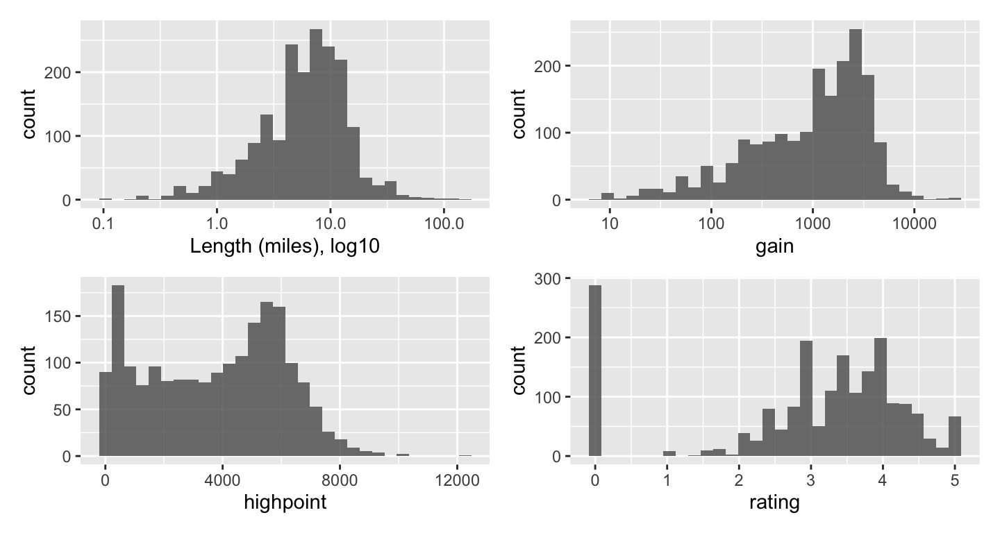
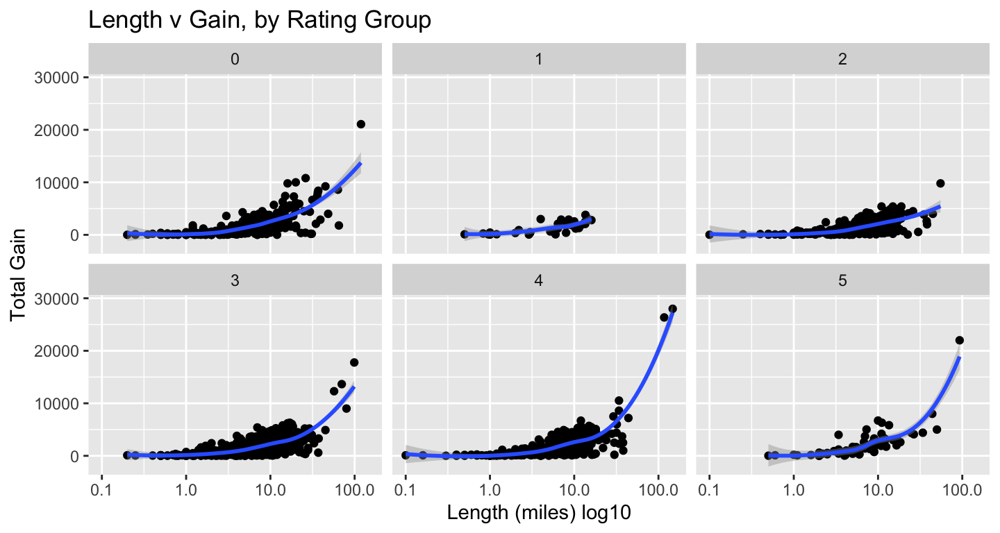
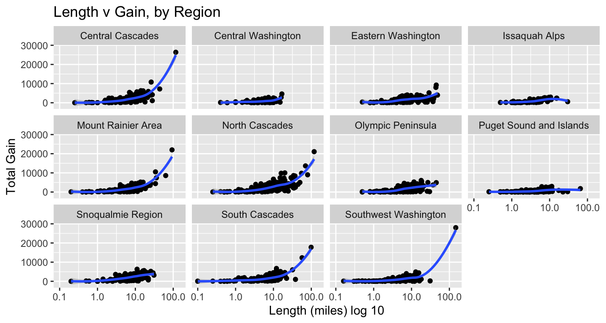
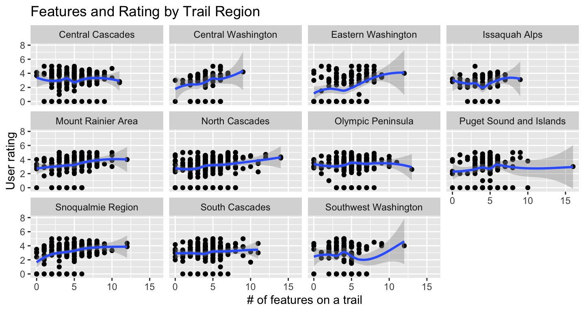

# load packages
library(tidytuesdayR) # to load tidytuesday data
library(tidyverse) # to do tidyverse things
library(tidylog) # to get a log of what's happening to the data
library(patchwork) # stitch plots together
library(gt) # lets make tables
library(RColorBrewer) # colors!
library(scales) # format chart outputDiving deep into the Tidy Tuesday pool…
Every week I’m so impressed by the amount of beautiful, creative and informative analyses and data viz efforts that spring from #TidyTuesday, the weekly data project that evolved out of the R4DS Learning Community. And every week I say to myself, “I should really give it a go, grab the data and post some results”. Then life intervenes, work gets crazy, and before I know it…
Well, around Thanksgiving, with some slack time and some inspiration, I finally got around to it. A resulting benefit was it got me motivated to finally get around to getting this blog set up. My github repo has a folder for any tidytuesday projects I get around to.
Here’s the code and resulting charts & tables.
First let’s read in the file using the tidytuesdayR package. We’ll also look at the raw data
tt_watrail <- tt_load("2020-11-24")
#>
#> Downloading file 1 of 1: `hike_data.rds`
glimpse(tt_watrail$hike_data)
#> Rows: 1,958
#> Columns: 8
#> $ name <chr> "Lake Hills Greenbelt", "Snow Lake", "Skookum Flats", "Ten…
#> $ location <chr> "Puget Sound and Islands -- Seattle-Tacoma Area", "Snoqual…
#> $ length <chr> "2.3 miles, roundtrip", "7.2 miles, roundtrip", "7.8 miles…
#> $ gain <chr> "50", "1800", "300", "1585", "500", "500", "425", "450", "…
#> $ highpoint <chr> "330.0", "4400.0", "2550.0", "2370.0", "1000.0", "2200.0",…
#> $ rating <chr> "3.67", "4.16", "3.68", "3.92", "4.14", "3.14", "5.00", "2…
#> $ features <list> <"Dogs allowed on leash", "Wildlife", "Good for kids", "L…
#> $ description <chr> "Hike through a pastoral area first settled and farmed in …There are a few things we want to do with the data for the working dataframe:
- create columns for miles, direction, type from length
- create specific location columns frolm location
- change rating, gain and highpoint to numeric
- create a rating group
- change features to character vector, also unnest; makes the resulting df long. we’ll use distinct when we only need 1 obs per trail
tt_watraildf <- tt_watrail$hike_data %>%
mutate(length_miles = parse_number(length)) %>%
mutate(across(gain:rating, as.numeric)) %>%
mutate(rating_grp = case_when(rating == 0 ~ "0",
rating >0 & rating < 2 ~ "1",
rating >=2 & rating < 3 ~ "2",
rating >=3 & rating < 4 ~ "3",
rating >=4 & rating < 5 ~ "4",
rating == 5 ~ "5")) %>%
mutate(trail_type = case_when(grepl("roundtrip", length) ~ "Round trip",
grepl("one-way", length) ~ "One Way",
grepl("of trails", length) ~ "Trails")) %>%
mutate(location_split = location) %>%
separate(location_split, c("location_region","location_specific"), sep = ' -- ') %>%
mutate(features = lapply(features, sort, na.last = TRUE)) %>%
mutate(feature_v = sapply(features,FUN = function(x) if (all(is.na(x))) NA else paste(x,collapse = ", "))) %>%
mutate(feature_v = str_trim(feature_v)) %>%
mutate(features_unnest = features) %>%
unnest(cols = c(features_unnest), keep_empty = TRUE) %>%
mutate(feature_v = ifelse(is.na(feature_v), "none", feature_v)) %>%
mutate(features_unnest = ifelse(is.na(features_unnest), "none", features_unnest)) %>%
mutate(feature_init = case_when(features_unnest == "Dogs allowed on leash" ~ "DA",
features_unnest == "Dogs not allowed" ~ "DN",
features_unnest == "Wildlife" ~ "Wl",
features_unnest == "Good for kids" ~ "GK",
features_unnest == "Lakes" ~ "Lk",
features_unnest == "Fall foliage" ~ "FF",
features_unnest == "Ridges/passes" ~ "RP",
features_unnest == "Established campsites" ~ "EC",
features_unnest == "Mountain views" ~ "MV",
features_unnest == "Old growth" ~ "OG",
features_unnest == "Waterfalls" ~ "Wf",
features_unnest == "Wildflowers/Meadows" ~ "WM",
features_unnest == "Rivers" ~ "Ri",
features_unnest == "Coast" ~ "Co",
features_unnest == "Summits" ~ "Su")) %>%
mutate(feature_init = ifelse(is.na(feature_init), "none", feature_init)) %>%
mutate(feature_type = if_else(feature_init %in% c("DA","DN","GK"), "Companion", "Feature")) %>%
mutate(feature_type = ifelse(feature_init == "none", "none", feature_type)) %>%
group_by(name) %>%
mutate(feature_n = n()) %>%
ungroup() %>%
mutate(feature_n = ifelse(feature_init == "none", 0, feature_n)) %>%
select(name, location_region, location_specific, trail_type, length_miles,
gain, highpoint, rating, rating_grp, features, feature_v, features_unnest,
feature_init, feature_type, feature_n, description, location, length)To get a sense of what the data look like, I’ll run some historgrams and scatterplots to see how things cluster, if there are outliers or anything else especially noticable.
Using log10 for the length scale to even out the spread. The patchwork package stitches the plots together in a neat panel.
hist_length <-
tt_watraildf %>%
distinct(name, .keep_all = TRUE) %>%
ggplot(aes(length_miles)) +
geom_histogram(alpha = 0.8) +
scale_x_log10() +
labs(x = "Length (miles), log10")
hist_gain <-
tt_watraildf %>%
distinct(name, .keep_all = TRUE) %>%
ggplot(aes(gain)) +
geom_histogram(alpha = 0.8) +
scale_x_log10()
hist_high <-
tt_watraildf %>%
distinct(name, .keep_all = TRUE) %>%
ggplot(aes(highpoint)) +
geom_histogram(alpha = 0.8)
hist_rate <-
tt_watraildf %>%
distinct(name, .keep_all = TRUE) %>%
ggplot(aes(rating)) +
geom_histogram(alpha = 0.8)
(hist_length | hist_gain) /
(hist_high | hist_rate)
For the scatterplots, I plotted length by gain, faceting by ratings groups and then by region. We do have to be careful with ratings, as they are user-generated and some trails have very few votes. Log10 used again for length.
tt_watraildf %>%
distinct(name, .keep_all = TRUE) %>%
ggplot(aes(length_miles, gain)) +
geom_point() +
geom_smooth() +
scale_x_log10() +
labs(x = "Length (miles) log10", y = "Total Gain",
title = "Length v Gain, by Rating Group") +
facet_wrap(vars(rating_grp))
tt_watraildf %>%
distinct(name, .keep_all = TRUE) %>%
ggplot(aes(length_miles, gain)) +
geom_point() +
geom_smooth() +
scale_x_log10() +
labs(x = "Length (miles) log 10", y = "Total Gain",
title = "Length v Gain, by Region") +
facet_wrap(vars(location_region))
The outliers in terms of gain & length clustered in a few regions, so I wanted to see which they were. Not a surprise they clustered in the Cascades & Rainier.
tt_watraildf %>%
distinct(name, .keep_all = TRUE) %>%
filter(gain > 15000) %>%
filter(length_miles > 90) %>%
select(location_region, name, length_miles, gain) %>%
arrange(name)
#> # A tibble: 5 × 4
#> location_region name length_miles gain
#> <chr> <chr> <dbl> <dbl>
#> 1 Southwest Washington Pacific Crest Trail (PCT) Section H -… 148. 27996
#> 2 South Cascades Pacific Crest Trail (PCT) Section I -… 99 17771
#> 3 Central Cascades Pacific Crest Trail (PCT) Section K -… 117 26351
#> 4 North Cascades Pacific Northwest Trail - Pasayten Tr… 119 21071
#> 5 Mount Rainier Area Wonderland Trail 93 22000Now that we see how the length, gain, highpoint & ratings spread out, I want build a table to see the averages by region.
I’ve been wanting to take a deeper dive into gt & reactable. I’ve got some basic gt calls down, but for this excercise I wanted to learn how to conditionally format columns based on value. So inspired by Thomas Mock’s gt primer, a basic table with heatmap-like formatting for some columns. See his explainer for details on the code, and for more features than I’m including.
# create by region averages df
byregion <- tt_watraildf %>%
distinct(name, .keep_all = TRUE) %>%
group_by(location_region) %>%
summarise(n_region = n(),
avglength = mean(length_miles),
avgrating = mean(rating),
avggain = mean(gain),
avghigh = mean(highpoint),
minhigh = min(highpoint),
maxhigh = max(highpoint)) %>%
mutate_at(vars(avglength:avgrating), round, 2) %>%
mutate_at(vars(avggain:avghigh), round, 0)
byregion %>%
gt() %>%
fmt_number(columns = vars(avggain, avghigh, minhigh, maxhigh), decimals = 0, use_seps = TRUE) %>%
# sets the columns and palette to format cell color by value range
data_color(
columns = vars(avglength, avgrating, avggain, avghigh, minhigh, maxhigh),
colors = scales::col_numeric(
palette = c("#ffffff", "#f2fbd2", "#c9ecb4", "#93d3ab", "#35b0ab"),
domain = NULL)) %>%
# tab_style calls add border boxes first to column labels, then body cells
tab_style(
style = list(
cell_borders(
sides = "all", color = "grey", weight = px(1))),
locations = list(
cells_column_labels(
columns = gt::everything()
))) %>%
tab_style(
style = list(
cell_borders(
sides = "all", color = "grey", weight = px(1))),
locations = list(
cells_body(
rows = gt::everything()
))) %>%
cols_align(columns = TRUE, align = "center") %>%
cols_align(columns = "location_region", align = "left") %>%
cols_width(vars(location_region) ~ px(150),
vars(n_region) ~ px(60),
starts_with("avg") ~ px(80),
ends_with("high") ~ px(90)
) %>%
tab_header(title = "Regional Averages",
subtitle = md("_North Cascades have longest trails,
all mountain areas have lots of gain and highest points_")) %>%
cols_label(location_region = "Region", n_region = "N", avglength = "Avg Length (miles)",
avgrating = "Avg Rating", avggain = "Avg Gain (ft)",avghigh = "Avg high point",
minhigh = "Lowest high point", maxhigh = "Max high point")| Regional Averages | |||||||
| North Cascades have longest trails, all mountain areas have lots of gain and highest points | |||||||
| Region | N | Avg Length (miles) | Avg Rating | Avg Gain (ft) | Avg high point | Lowest high point | Max high point |
|---|---|---|---|---|---|---|---|
| Central Cascades | 219 | 9.53 | 3.04 | 2,276 | 4,752 | 600 | 9,511 |
| Central Washington | 79 | 5.71 | 2.78 | 823 | 2,260 | 240 | 6,876 |
| Eastern Washington | 142 | 9.33 | 2.15 | 1,592 | 4,410 | 300 | 7,310 |
| Issaquah Alps | 76 | 5.03 | 2.53 | 984 | 1,518 | 250 | 3,004 |
| Mount Rainier Area | 193 | 8.19 | 3.35 | 1,881 | 5,222 | 800 | 10,080 |
| North Cascades | 292 | 11.24 | 3.08 | 2,535 | 5,111 | 125 | 9,200 |
| Olympic Peninsula | 209 | 8.13 | 3.32 | 1,572 | 2,821 | 20 | 6,988 |
| Puget Sound and Islands | 190 | 4.25 | 2.80 | 452 | 573 | 10 | 3,750 |
| Snoqualmie Region | 216 | 8.71 | 3.15 | 2,198 | 4,467 | 450 | 9,416 |
| South Cascades | 188 | 8.44 | 3.07 | 1,641 | 4,732 | 922 | 12,276 |
| Southwest Washington | 120 | 6.58 | 2.69 | 1,171 | 1,774 | 20 | 7,800 |
Now let’s look at the effect of trail features on rating.
First we’ll look at average rating by feature, then fit a model. First, a scatter-plot of number of features listed for a trail with user rating. Looks like at a certain point, it’s diminshing returns on trail features in terms of effect on rating.
tt_watraildf %>%
distinct(name, .keep_all = TRUE) %>%
ggplot(aes(feature_n, rating)) +
geom_point() +
geom_smooth() +
labs(x = "# of features on a trail", y = "User rating",
title = "Features and Rating by Trail Region") +
facet_wrap(vars(location_region))
Here’s a table similar to the one for averages by region. I used the unnested features, so trails will be represented more than once. Dog-free trails do get the highest ratings, but it’s likely because they also tend to have highest high points, so offer views, are challenging, and so get good ratings.
byfeature <-
tt_watraildf %>%
group_by(features_unnest) %>%
summarise(n_feature = n(),
avgrating = mean(rating),
avglength = mean(length_miles),
avggain = mean(gain),
avghigh = mean(highpoint),
minhigh = min(highpoint),
maxhigh = max(highpoint)) %>%
mutate_at(vars(avglength:avgrating), round, 2) %>%
mutate_at(vars(avggain:avghigh), round, 0) %>%
arrange(desc(avgrating))
## create table
byfeature %>%
gt() %>%
fmt_number(columns = vars(n_feature, avggain, avghigh, minhigh, maxhigh), decimals = 0, use_seps = TRUE) %>%
# sets the columns and palette to format cell color by value range
data_color(
columns = vars(avglength, avgrating, avggain, avghigh, minhigh, maxhigh),
colors = scales::col_numeric(
palette = c("#ffffff", "#f2fbd2", "#c9ecb4", "#93d3ab", "#35b0ab"),
domain = NULL)) %>%
# tab_style calls add border boxes first to column labels, then body cells
tab_style(
style = list(
cell_borders(
sides = "all", color = "grey", weight = px(1))),
locations = list(
cells_column_labels(
columns = gt::everything()
))) %>%
tab_style(
style = list(
cell_borders(
sides = "all", color = "grey", weight = px(1))),
locations = list(
cells_body(
rows = gt::everything()
))) %>%
tab_header(title = "Averages by Feature",
subtitle = md("_Dog-free trails with waterfalls & high peaks earn high ratings_")) %>%
cols_align(columns = TRUE, align = "center") %>%
cols_align(columns = "features_unnest", align = "left") %>%
cols_width(vars(features_unnest) ~ px(150),
vars(n_feature) ~ px(60),
starts_with("avg") ~ px(80),
ends_with("high") ~ px(90)
) %>%
cols_label(features_unnest = "Feature", n_feature = "N", avglength = "Avg Length (miles)",
avgrating = "Avg Rating", avggain = "Avg Gain (ft)",avghigh = "Avg high point",
minhigh = "Lowest high point", maxhigh = "Max high point") | Averages by Feature | |||||||
| Dog-free trails with waterfalls & high peaks earn high ratings | |||||||
| Feature | N | Avg Rating | Avg Length (miles) | Avg Gain (ft) | Avg high point | Lowest high point | Max high point |
|---|---|---|---|---|---|---|---|
| Dogs not allowed | 255 | 3.52 | 9.28 | 1,921 | 4,173 | 10 | 10,080 |
| Waterfalls | 282 | 3.46 | 9.64 | 1,938 | 3,648 | 150 | 10,080 |
| Established campsites | 396 | 3.40 | 12.80 | 2,380 | 4,487 | 25 | 12,276 |
| Ridges/passes | 496 | 3.25 | 12.24 | 2,864 | 5,575 | 400 | 9,511 |
| Lakes | 583 | 3.19 | 9.92 | 1,988 | 4,231 | 20 | 9,511 |
| Old growth | 534 | 3.16 | 9.00 | 1,746 | 3,364 | 25 | 8,096 |
| Mountain views | 1,175 | 3.13 | 9.72 | 2,201 | 4,621 | 20 | 12,276 |
| Summits | 454 | 3.11 | 10.40 | 2,854 | 5,250 | 200 | 12,276 |
| Wildflowers/Meadows | 952 | 3.10 | 9.26 | 1,967 | 4,243 | 10 | 9,511 |
| Rivers | 547 | 3.05 | 9.76 | 1,731 | 3,205 | 10 | 12,276 |
| Good for kids | 694 | 3.01 | 4.63 | 569 | 2,080 | 10 | 8,245 |
| Wildlife | 747 | 3.00 | 8.84 | 1,541 | 3,241 | 10 | 10,080 |
| Dogs allowed on leash | 1,045 | 2.94 | 7.04 | 1,379 | 3,183 | 20 | 12,276 |
| Fall foliage | 508 | 2.94 | 8.28 | 1,618 | 3,334 | 20 | 9,249 |
| Coast | 106 | 2.89 | 4.12 | 351 | 433 | 10 | 6,454 |
| none | 68 | 2.38 | 7.26 | 1,758 | 3,849 | 60 | 8,970 |
And finally a quick model to see what might affect a trail rating.
It’s a simple linear model using length, gain, highpoint, & number of features to predict rating. The elevation of the highest point and number of features are both significant. I’d need to do more digging to see what the power of the estimate is on the rating. It’s also slightly counter-intuitive given that we saw in the charts that length, elevation and gain seem to positively affect rating. But then the model only accounts for 4% of varaince, so it’s not telling us much.
# creat df with distinct observations for each trail
tt_watraildf_dist <- tt_watraildf %>%
distinct(name, .keep_all = TRUE)
wtmodel1 <- lm(rating ~ length_miles + gain + highpoint + feature_n, data = tt_watraildf_dist)
summary(wtmodel1)
#>
#> Call:
#> lm(formula = rating ~ length_miles + gain + highpoint + feature_n,
#> data = tt_watraildf_dist)
#>
#> Residuals:
#> Min 1Q Median 3Q Max
#> -3.6984 -0.3776 0.3716 0.9284 2.4565
#>
#> Coefficients:
#> Estimate Std. Error t value Pr(>|t|)
#> (Intercept) 2.205e+00 8.942e-02 24.663 < 2e-16 ***
#> length_miles -6.565e-03 5.678e-03 -1.156 0.248
#> gain -3.590e-05 3.100e-05 -1.158 0.247
#> highpoint 8.318e-05 1.742e-05 4.775 1.93e-06 ***
#> feature_n 1.272e-01 1.484e-02 8.576 < 2e-16 ***
#> ---
#> Signif. codes: 0 '***' 0.001 '**' 0.01 '*' 0.05 '.' 0.1 ' ' 1
#>
#> Residual standard error: 1.398 on 1919 degrees of freedom
#> Multiple R-squared: 0.0488, Adjusted R-squared: 0.04682
#> F-statistic: 24.61 on 4 and 1919 DF, p-value: < 2.2e-16There’s plenty more to do with the set, and some responses I’ve seen on Twitter have been creative…network graphs, better models…but I was able to brush up on gt, learned how to unnest and keep obs where the list was empty. So a successful #tudytuesday.
This post was last updated on 2023-05-18